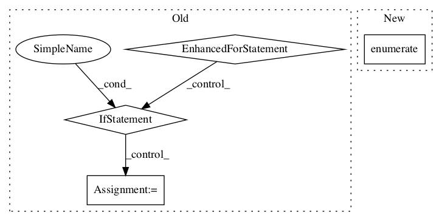

20f388cfe01635a2073723c5c4ffd6dd7a87fbb2,tensorflow_hub/tools/module_search/utils.py,,knn_errorrate_loo,#Any#Any#Any#,140

Before Change
cnt = 0
for i in range(np.shape(d)[0]):
cnt_i = 0
for j in range(k):
if y[i] != y[indices[i, j]]:
cnt_i += 1
if cnt_i >= k / 2.0:
cnt += 1
return float(cnt) / np.shape(d)[0]
After Change
indices = np.argmin(d, axis=1)
cnt = 0
for idx, val in enumerate(indices):
if y[idx] != y[val]:
cnt += 1
In pattern: SUPERPATTERN
Frequency: 3
Non-data size: 4
Instances
Project Name: tensorflow/hub
Commit Name: 20f388cfe01635a2073723c5c4ffd6dd7a87fbb2
Time:
Author: null
File Name: tensorflow_hub/tools/module_search/utils.py
Class Name:
Method Name: knn_errorrate_loo
Project Name: openai/baselines
Commit Name: b71152eea0470ac2629c33e0fc66a54fe494949f
Time:
Author: null
File Name: baselines/common/vec_env/dummy_vec_env.py
Class Name: DummyVecEnv
Method Name: step_wait
Project Name: tensorflow/hub
Commit Name: 20f388cfe01635a2073723c5c4ffd6dd7a87fbb2
Time:
Author: null
File Name: tensorflow_hub/tools/module_search/utils.py
Class Name:
Method Name: knn_errorrate